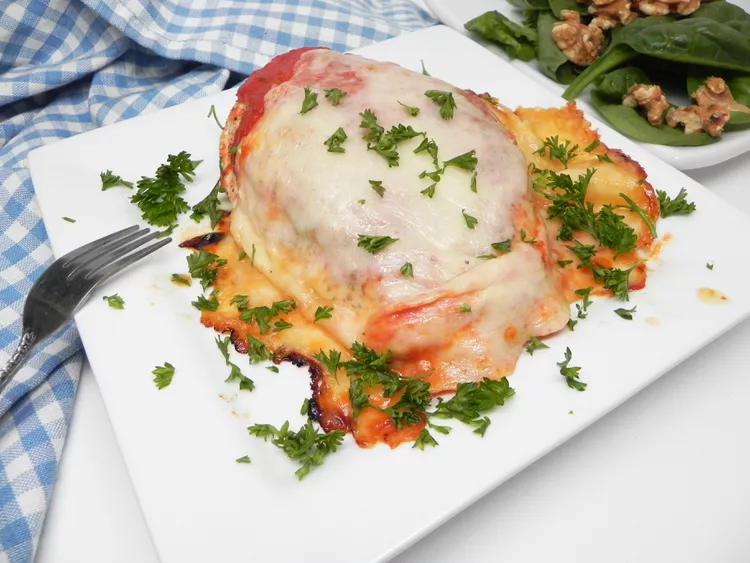

Chicken Parmesan

Description
Chicken Parmesan, or Chicken Parmigiana, is a classic Italian-American dish made with breaded chicken cutlets, marinara sauce, and melted cheese. It's a comforting and satisfying meal that's perfect for a family dinner or special occasion. This recipe is easy to make and can be served with pasta, salad, or crusty bread.
Ingredients
- 4 boneless, skinless chicken breasts
- 1 cup breadcrumbs
- 1/2 cup grated Parmesan cheese
- 1 teaspoon garlic powder
- 1 teaspoon dried oregano
Steps
- Preheat the oven to 400°F (200°C).
- In a shallow dish, combine breadcrumbs, Parmesan cheese, garlic powder, and oregano.
- Dip each chicken breast in the breadcrumb mixture, coating both sides.
- Place the breaded chicken breasts on a baking sheet and bake for 20-25 minutes, or until the chicken is cooked through.
- Top each chicken breast with marinara sauce and mozzarella cheese, and return to the oven until the cheese is melted and bubbly.
- Serve hot with pasta or salad.